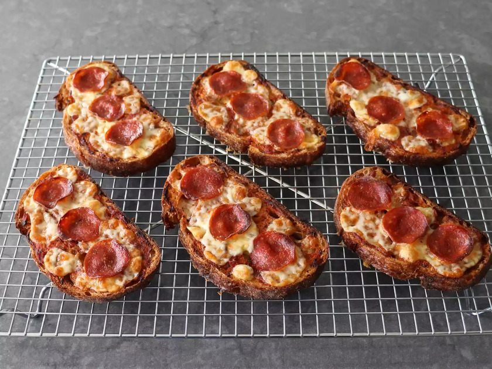

Bread and Butter No-Dough Pizza

Description
Everybody knows the biggest fuss of making pizza is dealing with the dough. Whether you buy it from the store or make it homemade, the process of stretching without tearing and baking it to your liking can be an ordeal.
Well, let us introduce you to a no-dough pizza hack that makes pizza night more accessible than ever. Plus, it’s one of our best new recipes.
Ingredients
- 6 slices stale French or Italian bread (1/2-inch thick)
- 6 tablespoons soft unsalted butter
- 1/2 cup finely grated Parmigiano-Reggiano cheese
- 2/3 cup pizza sauce, or as needed
- 6 ounces mozzarella cheese, diced
- 18 slices pepperoni
Steps
- Preheat the oven to 450 degrees F (230 degrees C). Line a baking sheet with parchment paper.
- Spread butter generously on both sides of the bread slices and set them out on the prepared baking sheet. Freshly grate Parmigiano-Reggiono cheese on top of each bread slice, pressing the cheese lightly into the butter so it sticks better. Turn bread slices over, so cheese side is down. Top with pizza sauce, making sure to spread it evenly on top of the slices.
- Bake in the preheated oven until bottoms start to turn golden brown, 10 to 12 minutes.
- Top with mozzarella and 3 pepperoni slices each (or toppings of your choice). Bake until mozzarella has melted and bottom crust is crispy and well browned, 10 to 12 minutes more.